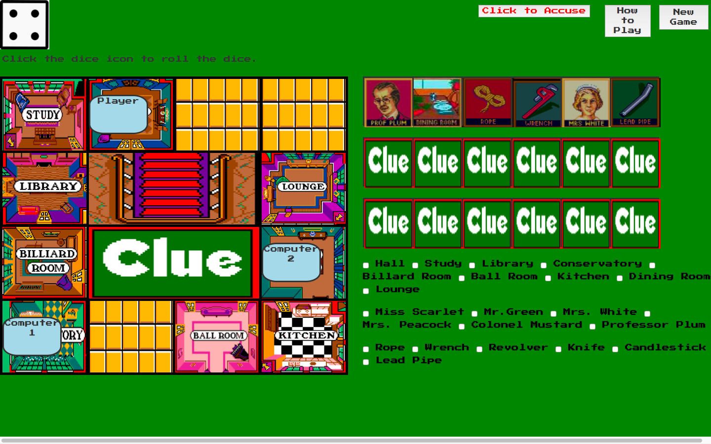
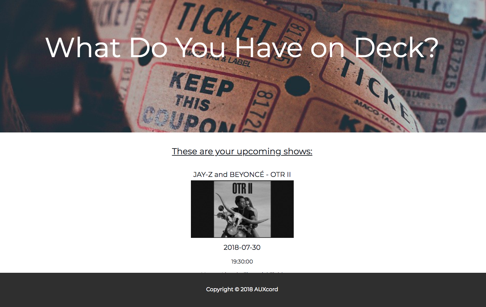
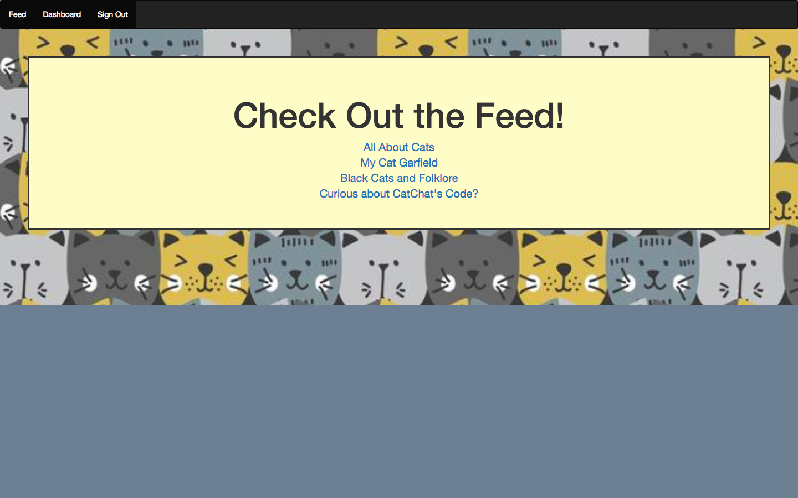

function hello(world){ Jordyn.Kimelheim === Developer}

Greetings! My name is Jordyn. I'm a Philly-based full stack developer with a particular affection for JavaScript.
In December 2017, I took a leap of faith and quit my day job in order to enroll in the New York Code + Design Academy's Web Development Intensive bootcamp. It was an amazing decison. I love an intellectual challenge, and coding stretches my logical and creative muscles to their limit. I'm just getting started with my career as a developer, and I'm excited to keep learning new things and making cool stuff.
Contary to popular belief, I don't spend all of my time coding. My other interests include literature, board games, true crime, cocktails, writing, food, writing about eating food, travel, and photography. I also volunteer as a digital organizer with IfNotNow.
A digital recreation of the classic game of deduction. Player competes against two computer opponents in a randomized scenario. Game mechanics developed in JavaScript. Design inspired by retro video game interfaces. Styled with SASS and Bootstrap.
An application for live music fans. Users can search database of upcoming concerts, make personalized lists of shows they're interested in and log which ones they've seen. Developed with a small team using a Ruby on Rails framework and Ticketmaster API.
A blogging platform for cat enthusiasts to connect. Built in Ruby on Rails.
